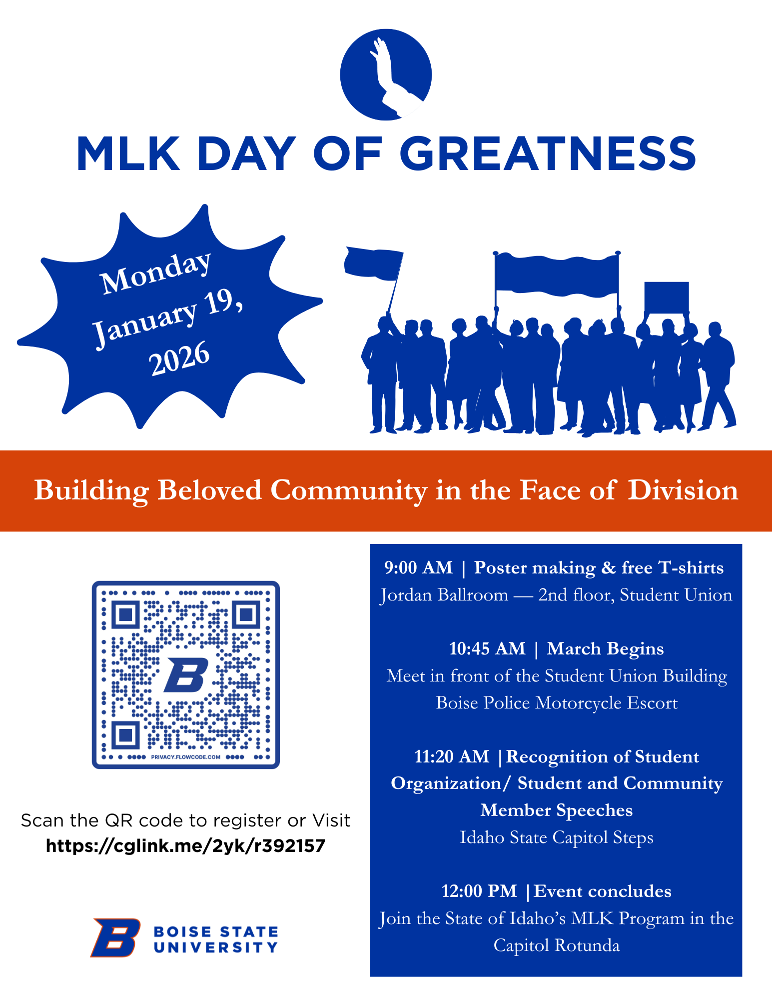
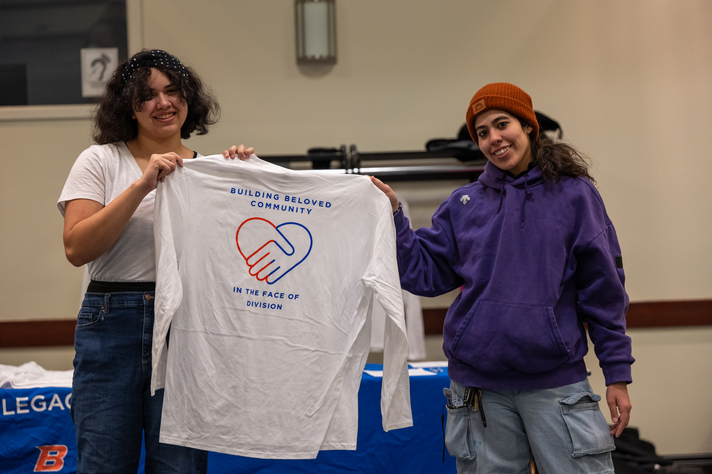
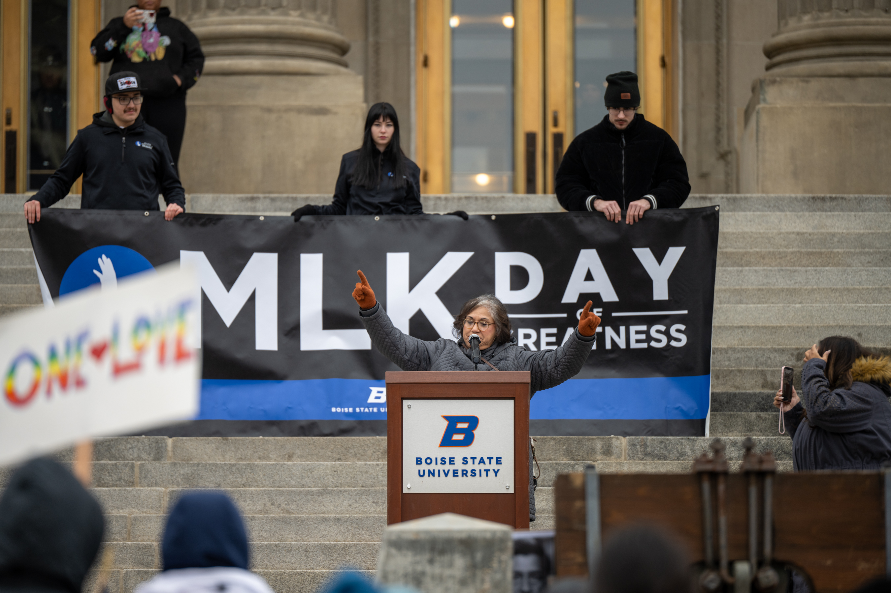

I worked with Boise State University's Martin Luther King Jr. Living Legacy Committee as their Graphic Design Delegate. My tasks mainly focused on creating designs for t-shirts and flyers for events in preparation for MLK Day 2026. My t-shirt designs were worn by many people during our celebration. You can read about it below.
MLK Day of Greatness Celebration
I began preparing for the event by creating a flyer in Canva. I made sure to follow Boise State University's brand standards, using only verified color choices and font types. I initially designed a more basic poster, and was asked to make it "pop" more. After playing around with different shapes and graphics, this is how it turned out.

After finishing flyers for the event, I worked on creating t-shirts which reflected both Boise State University's brand and our message as a committee. The theme this year was "Building Beloved Community in the Face of Division."

On January 19th, 2026, I had the honor of witnessing my design work come to life in a deeply meaningful way. After spending months creating flyers, shirts, and other visual materials for the MLK Day of Greatness celebration, seeing those designs carried through the march, surrounded by students and community members, was a powerful moment. Being part of this has shown me how visual storytelling can amplify voices and help bring communities together.